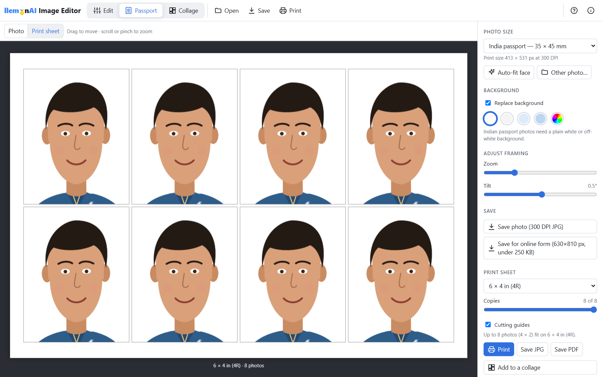

You don't need a studio to get a passport photo. A phone camera, a plain wall and a free app are enough to make a photo that's the right size, on a white background, ready to print at a photo shop or upload to the Passport Seva form. This guide walks through it step by step.
Rules change. Before you apply, check the latest photo requirements on the official Passport Seva website. This guide explains how to produce the sizes; it isn't official advice, and llemonai isn't connected to Passport Seva.
What size is an Indian passport photo?
| Use | Size | Notes |
|---|---|---|
| Printed passport photo | 35 × 45 mm (3.5 × 4.5 cm) | White background, printed at 300 DPI |
| Passport Seva online form | 630 × 810 pixels, under 250 KB | A JPEG file |
| India visa / OCI | 2 × 2 inch (51 × 51 mm) | Square |
| PAN card | 25 × 35 mm | Smaller than a passport photo |
Step 1: Take a good photo
Most rejected photos fail because of the original picture, not the editing. Take a few and keep the best one.
- Stand in front of a plain wall, light-coloured if possible. The app replaces the background, but a plain wall gives cleaner edges around hair.
- Face the light. Daylight from a window in front of you is ideal. Avoid a lamp or window behind you, and avoid strong shadows on one side of the face.
- Hold the camera at eye level, an arm's length or more away, or ask someone to take it. Don't use the wide selfie angle up close; it distorts the face.
- Look straight at the camera with a neutral expression, eyes open and mouth closed. Keep your head straight, not tilted.
- Leave space above your head and show your shoulders. The app crops the photo; it can't add what isn't there.
- No glare: remove glasses if they reflect light, and keep hair away from the eyes.
Step 2: Make the passport photo
This uses llemonAI Photo Editor, a free app for Windows, macOS and Android. It runs on your device: the photo is never uploaded.
- Open the app and click Passport in the toolbar.
- Click Choose photo. On Android you can also tap Take photo and use the camera.
- India passport 35 × 45 mm is already selected. The app finds the face, makes the background white and fits the head between the green "top of head" and "chin" guide lines automatically.
- If it needs adjusting, drag the photo, or use the Zoom and Tilt sliders.

Step 3: Save it the way you need it
For printing at home or at a photo shop
Open Print sheet. The default sheet puts 8 photos on 6 × 4 inch paper (the standard photo-print size, also called 4R) with cutting guides. Click Print, Save JPG or Save PDF. Any photo shop can print the 6 × 4 JPG. Larger sheets (7 × 5, A4 and more) are there too.
When you print yourself, choose 100% / Actual size in the print dialog, not "Fit to page", or the photos come out the wrong size.

For the Passport Seva online form
Click Save for online form. It saves a 630 × 810 pixel JPEG under 250 KB, ready to upload.
A single photo
Save photo (300 DPI JPG) saves one passport photo at print quality, for example to send to someone else to print.
Common problems
- The edge around the hair looks rough: retake the photo against a plainer wall with even light. A busy background makes the edges harder to find.
- The photo shop prints it too big or too small: give them the 6 × 4 sheet and ask for a 6 × 4 print at actual size, without cropping.
- The upload form rejects the file: use Save for online form, not the print photo. If a different form asks for another size, see how to reduce a photo to 50 KB or any size limit.
- You need a visa, OCI or PAN photo: choose that size from the list in Passport mode instead of India passport.
Quick checklist
- Plain wall, light in front of you, camera at eye level.
- Passport mode, India passport 35 × 45 mm, check the guide lines.
- Print sheet (8 on 6 × 4) for prints; Save for online form for Passport Seva.
- Print at 100% / Actual size.
- Check the latest official rules before applying.
Try it free: llemonAI Photo Editor
Free for Windows 10/11, macOS 12+ and Android. Passport photos, background removal, file-size limits and collages, all offline: your photos never leave your device.
Download Photo Editor